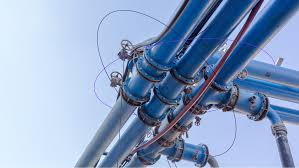

The world is becoming smarter and faster than ever before. Smart technologies are helping improve the quality of human life in all aspects, e.g., the way humans are transported ("smart mobility"), the way we live ("smart homes"), the way we communicate with each other ("smart communications"), the way we manage our health ("smart health"), and the way we are educated ("smart education"), among others. The water sector is a domain with the greatest potential and most room for improvement through the application of smart technologies. Recently, the concept of "smart water" has elicited particular attention, and is being considered as the only solution for current global water crisis, from climate change and droughts, to overpopulation (e.g., Los Angeles, London, and Cape Town).
Smart water consists of two key components: smart sensing and smart decision making. Real-time sensing/monitoring of micro- to macro-level water demand and other water variables enhances our system awareness, through which we can make much better operational and management decisions. More system information and better judgment may be possible.
There is no doubt that the core of smart technologies is advanced artificial intelligence (AI), such deep learning algorithms (DLAs). A Go match between the 18-time world champion, Sedol Lee, and a computer Go program developed by Google DeepMind based on DLA, AlphaGo, has clearly shown that machine intelligence can solve highly complicate problems if well trained with massive amounts of data. Many water problems can make the best use of this AI and machine learning. Big-data gathered in real-time are remotely fed to an AI, from which useful information and features can be selected and interpreted for yielding an optimal real-time decision. Enhanced computing technologies (high-performance computing) accelerate the process, whereas ICT provides a high-speed pathway among the aforementioned entities, i.e., smart sensing and AI decision making.
To allow Smart Water to successfully address and deliver the aforementioned issues, we augmented six new associate editors, with expertise in artificial intelligence, hydroinformatics, and green-blue water infrastructure, to our editorial board. I took over as Editor-in-Chief to accelerate our momentum toward smart water Prof. Phillipe Gourbesville maintained during the last two years. We also revised and updated the scope and themes of the journal to cover various issues in smart water management (SWM). Some of the major new additions are as follows:
1. Smart city issues with focus on smart water: Many mega cities around the world are now suffering from a water scarcity. SWM is therefore being considered as the most critical key of a smart city. A large number of government-driven researches and demonstration projects of smart cities have been launched across the globe, and efforts regarding the consideration of an SWM with other sectors (e.g., smart power grids, smart homes, and smart buildings) in a comprehensive manner have been recently reported to achieve and maximize water efficiency. Therefore, we will now accept inter-sectorial studies on the smart city with a focus on smart water.
2. Cyber-security for smart water system: Water-related systems (water supply, distribution, and wastewater systems) are no longer safe against cyber-attacks. In November 2011, the first cyber-attack on a U.S. industrial system was conducted against a water utility’s water pump, which was remotely shut down by foreign hackers. We have reached a moment in which our “water security” should incorporate “water security from cyber-attacks.” This domain requires inter-disciplinary efforts from civil-water engineering, computer science, and disaster management, among others.
3. Artificial intelligence for smart water: Andrew Ng, Vice President and Chief Scientist of Baidu (one of the largest Internet companies and a premier leader of AI in the world), and an adjunct professor at Stanford University, stated that “AI is the new electricity.” Smart water cannot be mentioned without AI, which will provide prompt decision support based on big-data gathered from sensors through ICT.
Given these new changes, we would like to receive high-quality smart water papers with both practical and academic advances and novelties, which will benefit practitioners, researchers, and decision makers in the water domain, and eventually develop Smart Water into a prestigious journal. We look forward to receiving journal papers that shed light on this particularly spotlighted field.